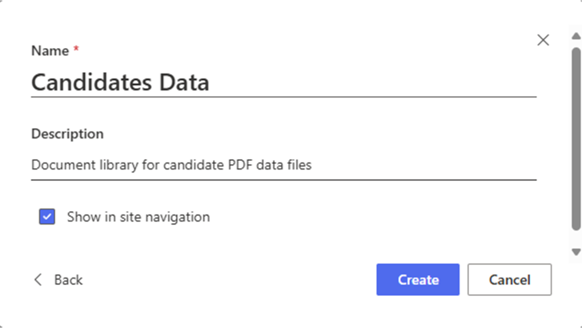
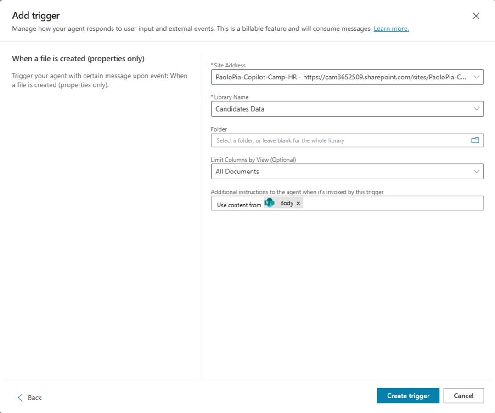
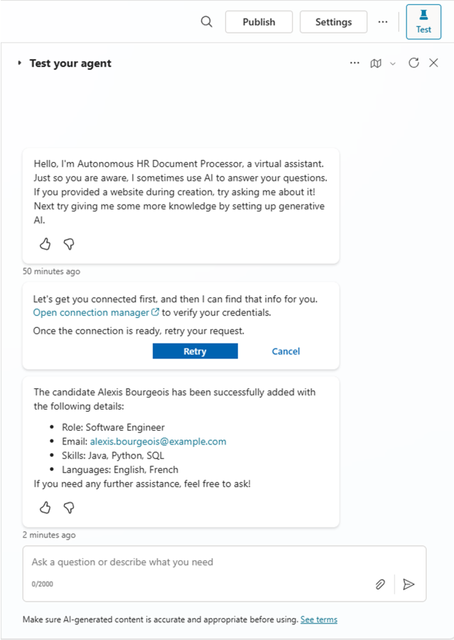
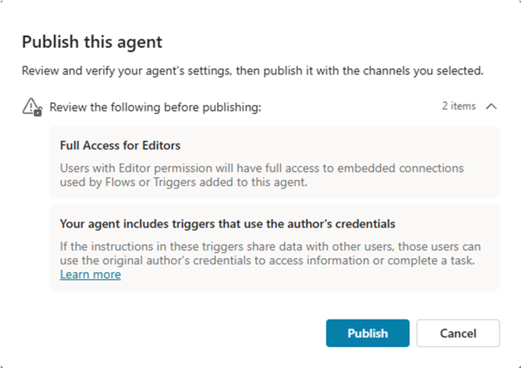
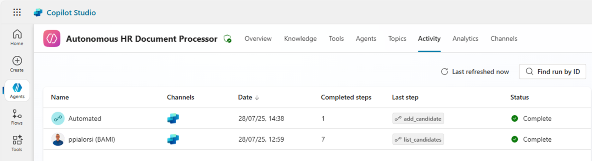
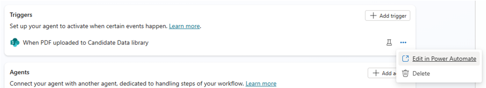

ラボ MCS7 - 自律型エージェントの作成
このラボでは、Microsoft Copilot Studio を使用して自律型エージェントを作成する方法を学習します。作成する自律型エージェントは、SharePoint にアップロードされた PDF ファイルから候補者データを自動的に処理します。エージェントは SharePoint のドキュメント ライブラリを監視し、新しい PDF がアップロードされると AI を使用して候補者情報を抽出し、前のラボ MCS6 で構築した MCP サーバーを通じて候補者レコードを自動的に作成します。このラボでは、ドキュメント処理とデータ入力タスクを自動化することで、自律型エージェントが人事ワークフローをどのように合理化できるかを示します。
Microsoft Copilot Studio で エージェントを構築したい場合は、これらの ラボ を実施してください
Note
このラボは前回の ラボ MCS6 を前提としています。前回設定した同じ MCP サーバーを引き続き利用できます。
このラボで学習する内容:
- Microsoft Copilot Studio で自律型エージェントを作成する方法
- SharePoint ドキュメント ライブラリのトリガーを構成する方法
- AI で PDF ドキュメントを処理し構造化データを抽出する方法
- 自律型エージェントを MCP サーバーと統合する方法
Exercise 1: SharePoint 環境の準備
この演習では、自律型エージェントのトリガー ポイントとなる SharePoint ドキュメント ライブラリを準備します。エージェントはこのライブラリを監視し、候補者データを含む新しい PDF ファイルを自動的に処理します。
Step 1: SharePoint ドキュメント ライブラリの作成
自律型エージェントを作成する前に、HR 担当者が候補者の PDF ファイルをアップロードできる SharePoint ドキュメント ライブラリを設定します。
Microsoft 365 テナント内の任意の SharePoint サイト（または新規作成したサイト）に移動し、新しいドキュメント ライブラリを作成します。
- サイト コンテンツ に移動し 新規 → ドキュメント ライブラリ を選択
- テンプレートとして 空白のライブラリ を選択
- ライブラリ名:
Candidates Data - 説明:
Document library for candidate PDF data files - 作成 を選択してライブラリを作成

作成後、エージェントがアクセスできるようにライブラリのアクセス許可を構成します。
- 設定 (歯車アイコン) → ライブラリの設定 を選択
- アクセス許可と管理 で このドキュメント ライブラリのアクセス許可 を選択
- Microsoft Copilot Studio 用に使用するアカウントが最低でも 投稿 権限を持っていることを確認
Step 2: サンプル PDF ファイルの準備
テスト用に resumes.zip をダウンロードし、フォルダーを解凍します。
ダウンロードしたファイルには以下のような架空の候補者情報が含まれています。
- 氏名
- メール アドレス
- 現在の役職 / ポジション
- スキルと専門分野
- 使用言語
任意のワープロを使用して簡単な PDF を作成するか、既存の履歴書 / CV を利用しても構いません。AI が正しく情報を抽出できるよう、テキストが読み取り可能であること（スキャン画像ではないこと）を確認してください。
Step 3: 前提条件の確認
次を完了していることを確認してください。
- ラボ MCS6: HR MCP サーバーが dev tunnel 経由で起動しアクセス可能である
- SharePoint アクセス: ドキュメント ライブラリを作成・管理する権限
- Power Platform 環境: 前回のラボと同じ環境へのアクセス
- サンプル PDF: 候補者データを含む PDF ファイルを 2〜3 つ用意
また、ラボ MCS6 の HR MCP サーバーが起動していることを確認し、停止している場合は以下で起動します。
dotnet run
続いて dev tunnel がアクティブであることを確認します。
devtunnel host hr-mcp
本ラボ中はエージェントが MCP サーバーへ通信できるよう、両サービスを起動したままにしてください。
Exercise 2: 自律型エージェントの作成
この演習では、SharePoint ドキュメント ライブラリを監視し、新しい PDF を自動処理する自律型エージェントを Microsoft Copilot Studio で作成します。
Step 1: 自律型エージェントの作成
ブラウザーを開き、対象 Microsoft 365 テナントの作業アカウントで https://copilotstudio.microsoft.com にアクセスします。
前回のラボで作成した Copilot Dev Camp 環境を選択し、左ナビゲーションの 作成 を選択して エージェント を選びます。
構成 を選択し、次の設定で自律型エージェントを定義します。
- 名前:
Autonomous HR Docs Processor
- 説明:
An autonomous AI agent that monitors SharePoint for new candidate PDF uploads and
automatically processes them to create candidate records via MCP server integration
- 手順:
You are an autonomous HR assistant that specializes in processing candidate data
from PDF documents. When a new PDF file is uploaded to the SharePoint document library,
you automatically:
1. Extract candidate information from the PDF including name, email, skills, languages, and role
2. Validate and structure the extracted data
3. Create a new candidate record using the 'add_candidate' tool of the HR MCP server
4. Provide confirmation of successful processing
Always ensure data accuracy and provide clear feedback about the processing results.
Handle errors gracefully and provide informative messages when processing fails.
DO NOT invent or assume fake data about candidates. AVOID allucinations.
You MUST ONLY process real and existing data.
作成 を選択して自律型エージェントを生成します。
Step 2: エージェント知能の強化
エージェント作成後、生成 AI の推論とナレッジ統合を有効化して能力を強化します。
オーケストレーション セクションで 生成 AI を使用してユーザーやイベントに最適な応答を決定する を有効にします。これによりエージェントはイベントに応じた適切なアクションを自律的に選択できます。

ナレッジ セクションでは、HR ドキュメントや候補者処理ガイドラインなど特定のナレッジ ソースを追加することもできますが、本ラボではエージェントの組み込み AI 機能と MCP サーバー統合に依存します。
設定を変更した場合は 保存 を選択して確定します。
Step 3: MCP サーバー統合の追加
エージェントが候補者レコードを作成できるよう、HR MCP サーバー ツールへアクセスを設定します。ツール セクションに移動し + ツールを追加 を選択します。
- Model Context Protocol グループを選択
- ラボ MCS6 で設定した HR MCP Server を選択
- 追加して構成 を選択し MCP サーバー ツールを統合

これでエージェントは HR MCP サーバーの全ツールにアクセスできます。
list_candidatessearch_candidatesadd_candidateupdate_candidateremove_candidate
エージェントは主に add_candidate ツールを用いて新しい PDF の処理を行います。
Exercise 3: SharePoint トリガーの構成
この演習では、新しい PDF ファイルが SharePoint ドキュメント ライブラリにアップロードされた際に自律型エージェントが自動的に起動するよう設定します。
Step 1: SharePoint トリガーの追加
自律型エージェントで 1️⃣ 概要 セクションに移動し、2️⃣ トリガー パネルで 3️⃣ + トリガーを追加 を選択します。

トリガーを追加 ダイアログから SharePoint コネクターの ファイルが作成されたとき (プロパティのみ) を選択し、次へ を選択します。

次にトリガー名を付け、対象アプリへの接続/アクセス許可を構成します。今回のアプリは以下です。
- Microsoft Copilot Studio
- SharePoint
次のように構成します。
- トリガー名:
When PDF uploaded to Candidate Data library

次へ を選択し、さらに以下を設定します。
- サイト アドレス: 対象 SharePoint サイトを選択または URL を入力
- ライブラリ名:
Candidate Data - フォルダー: 空欄 (ライブラリ全体を監視)
- ビューで列を制限 (省略可): All Documents
- このトリガーによって呼び出されたときにエージェントへ追加する手順:
Bodyの内容を使用

トリガーを作成 を選択して監視トリガーを追加します。処理には少し時間がかかります。完了するとテストを促すダイアログが表示されます。

閉じる を選択してエージェントの 概要 に戻ります。
Step 2: トリガーのテスト
トリガー 一覧に新しいトリガーが表示され、トリガー名の横にあるフラスコアイコンを選択してテストできます。

フラスコを選択すると、SharePoint ライブラリへのファイルアップロードを待機するダイアログが表示されます。

対象ライブラリにファイルがアップロードされるとダイアログが更新され、テストを開始 コマンドが有効になります。複数ファイルがアップロードされた場合はテストに使用するファイルを選択できます。
事前にダウンロードした履歴書の PDF をアップロードし、エージェントが処理するのを待ちます。
Note
新しいファイルを検出するまで最大 1 分ほどかかる場合があります。ダイアログが準備完了になるまでお待ちください。

テストが開始されると、エージェントをテスト サイド パネルでエージェントが対話を行います。まずエージェント インスタンスを HR MCP Server に接続する必要があります。自動メッセージの 接続マネージャーを開く を選択し、HR MCP Server に 接続 してから エージェントをテスト パネルに戻り 再試行 を選択します。
アップロードした PDF 履歴書の候補者が HR MCP サーバーに追加された旨の確認メッセージが表示されるはずです。

List all the candidates とプロンプトを送信して、新しい候補者が一覧に含まれていることを確認できます。自律型エージェントの準備は完了です。発行 して自動処理を開始しましょう。
エージェントを発行する際、次のような警告が表示される場合があります。

- 編集者のフル アクセス: Editor 権限を持つユーザーはフローやトリガーで使用される埋め込み接続にアクセスできます。
- トリガーが作成者の資格情報を使用: これらのトリガーの手順が他のユーザーとデータを共有する場合、そのユーザーは作成者の資格情報を用いて情報へアクセスできます。
エージェントを発行したら、新しい PDF 履歴書をアップロードして動作を確認しましょう。SharePoint ライブラリへファイルをアップロード後、エージェントの アクティビティ セクションに 自動 呼び出しが表示されます。

Exercise 4: 自律型エージェントの内部
この演習では、自律型エージェントがどのように動作するか、内部処理を理解します。
Step 1: トリガーの裏側
トリガーを作成・テストした後、その仕組みを確認したい場合は、トリガー横の省略記号 (...) を選択し Power Automate で編集 を選びます。

Power Automate では、自律型エージェントのトリガーの背後で動作するフローを確認できます。

フローは非常にシンプルで、SharePoint コネクターの ファイルが作成されたとき (プロパティのみ) トリガーと 指定した copilot へプロンプトを送信して処理 アクションだけです。つまり、自律型エージェントのトリガーは、エージェントへプロンプトを送信する Power Automate フローに他なりません。そのため、Power Automate フローのほぼすべてのトリガーを Copilot Studio 自律型エージェントのトリガーとして利用できます。
必要に応じて、フローをカスタマイズしてエージェント呼び出し前に追加の処理や機能を持たせることも可能ですが、その場合は次のステップで説明する点を考慮してください。
Step 2: 複数ファイルのアップロード処理
自律型エージェントのトリガーについてもう一つ重要なのは、SharePoint へ複数ファイルをアップロードした場合、必ずしもファイルごとに Power Automate フローが実行されるわけではない点です。同様に、ファイル / イベントごとにエージェント インスタンスが作成されるとも限りません。例えば、一定時間内にアップロードされた複数ファイルを 1 つのフロー インスタンスがまとめて処理することがあります。
フローは 1 つのエージェント インスタンスを呼び出し、そのインスタンスが各ファイルを順に処理します。
試しに 2 ファイル以上を同時にアップロードし、Power Automate のフロー実行と Copilot Studio のエージェント呼び出しを確認してみてください。アップロードされたファイル セットに対し 1 つのフローと 1 つのエージェント インスタンスのみが生成されるはずです。
エージェントの アクティビティ で 自動 インスタンスを選択し、完了した手順 が複数あることを確認できます。

インスタンスを開くと、エージェントが複数ファイルを自律的に処理し、ファイルごとに add_candidate ツールを呼び出していることがわかります。これは、エージェントの手順で
... When a new PDF file is uploaded to the SharePoint document library: ...
と記述しただけで、ループ処理を AI が自律的に行っているためです。AI の高い能力を実感できるでしょう。

おめでとうございます！
ラボ MCS7 - 自律型エージェントの作成 を完了しました!
こちら からラボ MCS8 に進み、Copilot Studio で Microsoft Azure AI Search を使用した RAG を学びましょう。